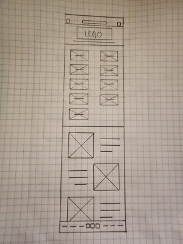
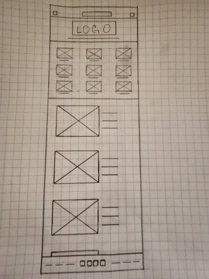

Project Overview
Eevee Umbreon is a jewelry designer that is in need of an app to showcase their designs. It needs to offer an enjoyable shopping experience for all users whenever and wherever they choose to shop. Client wants the users to feel secure and confident from the second they open the app to completing and receiving a purchase.
Project duration:
October 2022 (4 weeks)
The problem:
The client requested an app to ensure a pleasant shopping experience that would set them apart from their competitors.
The goal:
A pleasant shopping experience that is accessible to all users and offers a secure process to everyone who might be skeptical of purchasing luxury goods online.
My role:
Lead UX designer, UX researcher
Responsibilities:
User research, Wire-framing, Prototyping
An unmoderated usability study was conducted remotely on October 12th. I took a qualitative approach in my primary interviews. The results of those interviews revealed that accessibility and security were important issues among users, as well as a simple checkout process. I conducted a usability study followed up with a Systems Usability Scale. A second Usability Study identified a few features that the prototype was lacking.
User Pain Points
Accessibility icon
The study found that not all users recognized the accessibility icon or knew what the term meant.
User flow check-out process
Most users in our study either struggled with the check-out process or did not complete the task of completing an order.
Menu and its contents
All users in the study expressed confusion with the menu. We determined that moving accessibiltiy to the menu and simplifying the menu content would be benficial.
Back Navigation
I had no clear indication of how to navigate backwards in the user flow. The remedy was a back arrow on all appropriate screens.
Research
The target audience were individuals who enjoy and prefer shopping online to save time and access more options that also value security and trust.


Iteration
As you can see here I looked at a few options for the homepage but as you saw in my project overview more improvements were made.
The low-fidelity prototype was designed to test the user flow of the checkout process including completing an order, as well as locating and accessing the accessibility and customer service features.
Round 1 findings
Relocate accessibility to the menu and simplify the menu content.
Change the back icon to a more familiar option.
Simplify the check-out process
My thought process going into the initial design phase was to have an Accessibility icon located on the home screen. Based on the findings from the usability study it would be more beneficial to move accessibility to the menu occompanied by secondary text and remove the icon entirely. Most users either did not know what it was or thought it represented "user profile".
I wanted to create a menu with contents that users would already be familiar with. I chose a hamburger menu design.